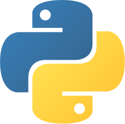
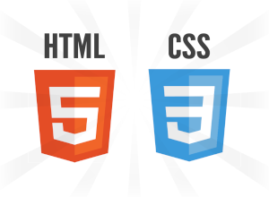
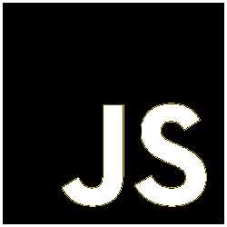
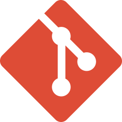

Sobre mim
Sou estudante de programação com experiência prática em Python, criando ferramentas como geradores de CPF, validador de cartões, apps de cotações via API e criadores de senhas seguras. Estou iniciando minha transição para o desenvolvimento web fullstack, mantendo meu foco em algoritmos, resolução de problemas e interfaces gráficas. Organizado e atento à teoria, busco aprender de forma consistente e construir projetos que unam funcionalidade e eficiência, com o objetivo de evoluir para back-end ou análise de dados no futuro.
Principais ferramentas do meu dia a dia
-

Python
Com Python, tenho familiaridade e bastante dominância, sendo minha primeira linguagem dominada. Atualmente estudo POO, modularização avançada e criação de projetos completos.
-

HTML5 & CSS3
Esta página foi desenvolvida apenas com HTML e CSS. Futuramente pretendo iniciar projetos web mais completos.
-

JavaScript
Ainda em fase inicial, focando nos fundamentos para desenvolvimento web.
-

Git
Utilizo Git para versionamento de projetos e materiais de estudo, com boa prática nos principais fluxos de trabalho.